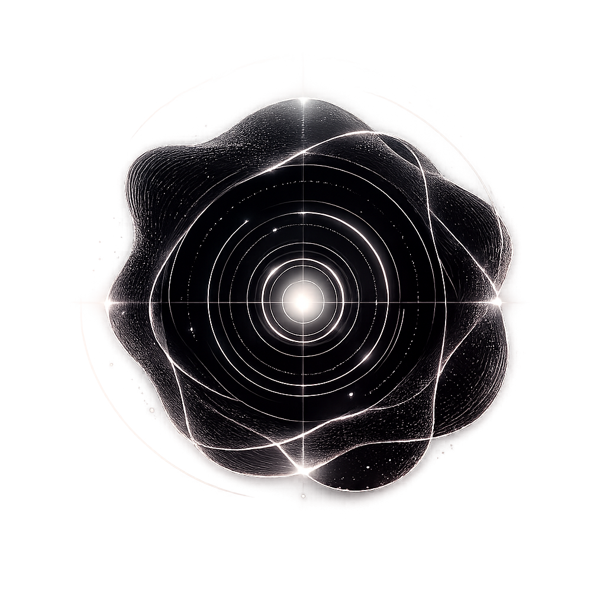

I engineer compound systems that separate probabilistic reasoning from deterministic execution. Fifteen years across ML, LLMs, and agentic AI — building architectures that survive in high-liability clinical and enterprise environments.

We do not pass raw neural output directly to execution vectors. Our systems are split into two completely isolated environments that communicate only through strict structural compilers.
Where open-weight SLMs and reasoning agents creatively explore non-linear solution spaces, run multi-agent debates, and generate candidate traces without production risk.
Converts raw text, medical telemetry, and time-series data (TimesFM) into initial embeddings.
Isolated agents running LangGraph cycle-states, fanning out to model hypothetical paths.
The absolute state platform. This rigid containment unit intercepts candidate graphs, strips away linguistic variance, and executes code via immutable transactional state lines.
Distills neural traces into strict mathematical DAGs, validating schema layout before runtime.
Applies non-negotiable clinical and business invariants. Catches and neutralizes hallucinations natively.
Executes transactional tasks through gRPC agents with cryptographic logging and telemetry tracing.
We classify systems by what must never happen. Each pattern is a control structure binding neural generation to strict deterministic verification.
Liability: A wrong action causes irreversible harm.
A deterministic rules engine controls the workflow. Neural models handle bounded fuzzy-logic tasks, but the symbolic engine owns execution, veto, and fallback. There is no override.
Use cases: Clinical decision support, autonomous vehicles, grid balancing.
Liability: A wrong conclusion wastes resources but is correctable.
A neural reasoner proposes a solution. An external ontology or graph verifies it. Violations trigger a self-correction feedback loop. Maximum iterations lead to a deterministic fallback.
System 1 Perception Feeder
Medical CoT alignment pipeline for `google/MedGemma-4B-IT`.
Liability: Competing autonomous actors sharing resources.
Neural agents propose strategies. A compiled mathematical engine (Nash equilibrium solver, VCG auction mechanism) checks every proposal against formal invariants.
Architecturally redundant. The Nash engine mathematically outclasses it.
We do not claim academic taxonomy compliance. Our systems are engineering hybrids. Every pattern declares its verification level honestly.
| Level | What it means | Implementation |
|---|---|---|
| Unit Tests | Component-level correctness | pytest across all production repos |
| Property-based | Invariant verification across inputs | Nash: 49 tests for IR & bounds |
| Benchmarks | Standardized task performance | TimesFM/Chronos-2 aligned to M5 WAPE |
| Audit Trails | Immutable, cryptographically signed | Clinical: full trace committed to ledger |